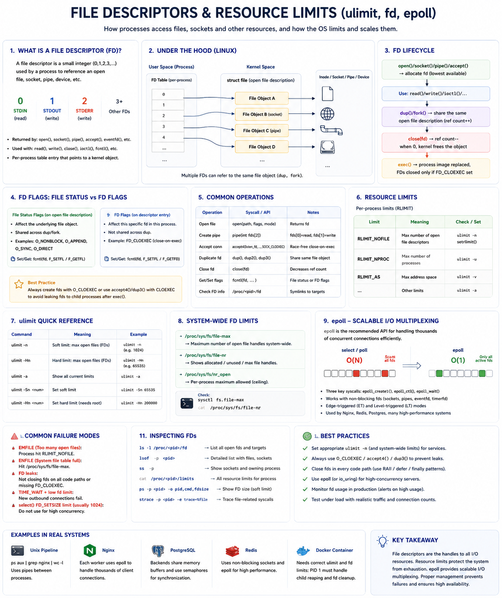

FD Lifecycle • ulimit • RLIMIT_NOFILE • epoll • FD Leaks • High-Concurrency I/O
Core Idea
Every I/O operation — opening a file, accepting a socket, reading a pipe — goes through a File Descriptor (FD): a small integer the kernel hands back as a handle to an underlying resource. Whether it's a file, socket, pipe, device, or epoll instance — everything in Linux is accessed through an FD. "Everything is a file."
0
stdin
1
stdout
2
stderr
3+
files / sockets
N
epoll / pipes
The FD is just an integer. It points to a kernel File Object which points to the actual resource. The app never touches the hardware directly.
What Happens Internally
The kernel always assigns the lowest available FD number. After close() the number is reused by the next open().
FD Lifecycle & Sharing
FD Flags to Know
| Flag | Effect |
|---|---|
O_CLOEXEC | Auto-close FD on exec() — prevents leaks to child programs |
O_NONBLOCK | Non-blocking I/O — read/write return immediately |
O_APPEND | Atomic appends — safe for concurrent log writers |
FD_CLOEXEC | Same as O_CLOEXEC, set via fcntl() |
Always create FDs with O_CLOEXEC or use accept4(..., SOCK_CLOEXEC) to avoid accidentally leaking sockets to child processes.
Common FD Operations
| Operation | Syscall | Notes |
|---|---|---|
| Open file | open(path, flags) | Returns new FD |
| Create pipe | pipe(fds[2]) | fds[0]=read, fds[1]=write |
| Accept connection | accept4(..., SOCK_CLOEXEC) | Race-free close-on-exec |
| Duplicate FD | dup() / dup2() / dup3() | Share same File Object |
| Close FD | close(fd) | Decrements ref count |
| Get/Set flags | fcntl(fd, F_GETFL/F_SETFL) | File status or FD flags |
| Check FD info | /proc/<pid>/fd | Symlinks to all open targets |
Resource Limits — Protecting the System
Every open FD consumes kernel memory, file table entries, and socket buffers. Linux enforces two tiers of limits:
| Limit | Meaning | Check/Set |
|---|---|---|
RLIMIT_NOFILE | Max open FDs per process | ulimit -n |
RLIMIT_NPROC | Max processes per user | ulimit -u |
RLIMIT_AS | Max address space | ulimit -v |
fs.file-max | System-wide kernel file table limit | sysctl |
fs.file-nr | Allocated / free / max counts | cat /proc/sys/fs/file-nr |
Soft vs Hard Limit
Soft Limit
Current working ceiling. Process can raise it up to the hard limit.
ulimit -Sn 65535
Hard Limit
Absolute ceiling. Only root can increase it.
ulimit -Hn 200000
ulimit Quick Reference
| Command | Meaning |
|---|---|
ulimit -n | Show soft FD limit |
ulimit -Hn | Show hard FD limit |
ulimit -a | Show all current limits |
ulimit -Sn 65535 | Set soft FD limit |
ulimit -Hn 200000 | Set hard limit (needs root) |
System-Wide Tuning
Nginx, PostgreSQL, and Redis all need LimitNOFILE tuned in their systemd unit files for high-concurrency deployments.
epoll — Scalable I/O Multiplexing
Traditional select() and poll() scan every FD on each call — O(N) complexity. As connections grow, CPU grows. epoll inverts this: the kernel tracks which FDs are ready and returns only those — approaching O(active events).
select / poll — O(N) — Scan Everything
epoll — O(active events) — Kernel Notifies
Three Key Syscalls
| Syscall | Purpose |
|---|---|
epoll_create1() | Create an epoll instance (returns FD) |
epoll_ctl() | Add / modify / remove FDs to watch |
epoll_wait() | Block until events arrive; returns ready FDs |
Trigger Modes
Edge-Triggered (ET)
Fires once when state changes. App must drain the FD completely. Higher performance, harder to use correctly.
Level-Triggered (LT)
Fires repeatedly while data is available. Easier to use. Default mode. Used by most applications.
Systems using epoll: Nginx, Redis, HAProxy, Envoy, PostgreSQL, Node.js, Netty.
FD Leaks — Most Common Production Issue
Detection
ls -l /proc/<pid>/fd — list all open FDslsof -p <pid> — detailed list with files & socketscat /proc/<pid>/limits — all resource limitsstrace -p <pid> -e trace=%file — trace file syscallsss -p — show sockets and owning processps -p <pid> -o pid,cmd,fdsize — show FD size (soft limit)Prevention
O_CLOEXEC on every FD before exec()ulimit -nCommon Failure Modes
EMFILE — Too many open files
Process hit its RLIMIT_NOFILE. New connections/files fail. Fix: raise LimitNOFILE in systemd and fix FD leaks.
ENFILE — System file table full
Kernel's global fs.file-max reached. Entire system cannot open new resources. Fix: increase fs.file-max, identify leaking processes.
FD leak — silent exhaustion
Missing close() or missing O_CLOEXEC causes gradual FD buildup. Monitor /proc/<pid>/fd count over time.
High CPU at scale with select()
select() has a hard limit of 1024 FDs and scans all of them every call. Replace with epoll for any high-concurrency server.
TIME_WAIT + low fd limit
Outbound connections linger in TIME_WAIT consuming FDs. Fix: tune tcp_tw_reuse, increase FD limit, or use connection pooling.
Real-World Examples
| System | FD Usage |
|---|---|
| Nginx | Each client = 1 socket FD. Uses epoll for 100k+ concurrent connections per worker. |
| PostgreSQL | Each backend opens DB files, WAL, client socket, temp files. Needs generous RLIMIT_NOFILE. |
| Redis | Non-blocking sockets + epoll. Serves millions of ops/sec from a single thread. |
| Docker/K8s | Container PID 1 must manage child FDs. Missing O_CLOEXEC leaks sockets into subprocesses. |
| Unix Pipeline | ps aux | grep nginx | wc -l — each | creates a pipe pair using 2 FDs. |
Staff Engineer Decision Framework
| Scenario | Approach |
|---|---|
| High-concurrency server | epoll (or io_uring on Linux 5.1+) |
| Prevent exec() FD leaks | O_CLOEXEC / SOCK_CLOEXEC on all FDs |
| Server returns EMFILE | Raise LimitNOFILE + fix leaks |
| System-wide exhaustion | Increase fs.file-max via sysctl |
| Detect FD leaks | /proc/<pid>/fd, lsof, strace |
| Reduce FD churn | Connection pooling — reuse sockets |
| Non-blocking I/O | O_NONBLOCK + epoll event loop |
Engineer Progression
Interview Cheat Sheet
Principal Engineer Takeaway
FD = ticket to a kernel resource. Count them — they directly measure concurrency.
RLIMIT_NOFILE — tune it. EMFILE at peak traffic = capacity planning failure.
FD leaks are silent killers. O_CLOEXEC + RAII + lsof monitoring prevent them.
epoll is why Nginx handles 100k connections per worker. select() cannot.
Staff Engineers focus on FD lifecycle management, resource limit tuning, connection pooling, leak prevention, and scalable event-driven I/O — because these directly determine the scalability and reliability of production systems.
